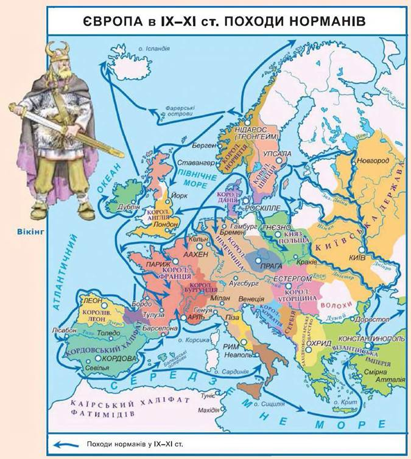

Походи

З 787 року вікінги почали нападати на Англію, здійснюючи свої розбійницькі набіги на міста і монастирі, вивозячи з собою награбоване та рабів. Одними з відоміших з вікінгів були Рагнар Лодброк, його син Івар та інші.
790-840 роки — пограбування і напади на узбережжя передусім на кельтські області: Ліндісфарн (у 793 році), Ярроу, Монквермут (у 794 році), Рехру, Ск'є та Іона (у 795 році).
Із 799 року — пограбування на фризько-саксонському узбережжі, які спонукають франкського короля Карла Великого до створення прибережної охорони. Як правило вікінги нападали навесні, а поверталися взимку.
З 840 року, після смерті франкського короля Людовика Благочестивого, здійснюються походи величезних військ вікінгів на західне узбережжя Франкської держави, де вікінги влаштовують постійні табори в гирлах річок і зимують.
Данські вікінги (Велике військо) щороку грабують прирічкові міста франкської держави, здійснюють розбійні походи до Астурії і Португалії у 844 році, на Балеари, у Прованс і Тоскану у 859-862 роках. Пізніше підкорюють в Англії Нортумбрію та Східну Англію, що перетворюються в Данелаг (область панування данів). Лише Альфред Великий, король Вессексу, вистоює, створивши флот. У 878 році після поразки від англійського короля Альфреда ними було укладено договір про розподіл території Англії. За Канута Великого Англія об'єднується з Данією. Згодом загарбницькі походи 980-990 років відбуваються на чолі з данськими королями.
Норвезькі вікінги займають у VIII столітті Шетландські та Оркнейські острови, потім Фарери, Гебриди та Ірландію. Після того як Норвегію об'єднує у 872 році Гаральд Гарноволосий (близько 860-933 роки), багато норвежців залишають батьківщину й переселяються із 874 року до Ісландії, яку відкрили ще у 860 році. Період зайняття землі завершується оформленням права і тінгом 930 року. 982 року норвезькі вікінги відкривають та заселяють Гренландію, близько 1000 року — Америку (Вінландію).
Шведські вікінги здійснюють походи на східноєвропейські простори. Закликані слов'янськими і фінськими племенами, вони приходять під проводом Рюрика на територію Новгорода.
У 10 столітті вікінги нападали також і на землі Франції. Так, наприклад, у 886 році вони навіть узяли в облогу Париж, але французький король Карл ІІ Лисий зумів від них відкупитися. Заселена вікінгами територія здобула назву Нормандія.Близько 1000 року відбувається християнізація вікінгів і вони стають осілими.
Пізніше вікінги оселилися на землях Ісландії та Гренландії. Але жорстокі природно-кліматичні умови та неврожаї привели до загибелі вікінзької колонії в Гренландії. На півночі Європи вони досягли узбережжя Білого моря, на заході та південному заході вони, обігнувши Європу, доплили до італійських міст Середземномор'я — Генуї та Венеції. На сході вони спустилися Волгою через Каспій до берегів Персії і досить довгий час вели работоргівлю з персами й арабами. Південно-східний напрямок експансії вікінгів річками Волхов та Дніпро до Візантії здобув назву «Путь з варяг у греки».
Завдяки морехідним якостям своїх човнів вікінги у 1000 році досягли берегів Північної Америки, де вони заснували кілька поселень, але згодом їх було витіснено племенами індіанців. Археологами достовірно встановлені оселі вікінгів в Канаді. Але, аналізуючи тексти саг, вчені дійшли висновку, що вікінги також досягли узбережжя Америки у районі сучасного Нью-Йорка.
Близько 1000 року, вікінги, повертаючись з походу із Північної Америки, також доставили перших корінних американців в Ісландію.
Іноді вікінгам вдавалося покласти на населення регулярну данину, яка мала назву «данські гроші» («данегельд»). Ця назва вперше згадується на початку 11 століття, хоча подібні побори виплачувалися і раніше, вже починаючи з 9 століття. Стосовно виплати цієї данини, між правителями країн та провідниками вікінгів складався відповідний договір, згідно з яким вікінги брали на себе захист узбережжя від інших завойовників. Так, наприклад, у 1012 році англійський король Етельред Нерішучий виплатив 48 тисяч фунтів срібла очільнику данського флоту Торкелю Високому, який обіцяв захищати країну від нападів.